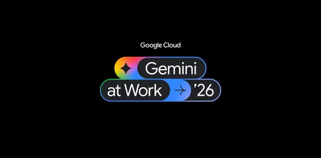

Google、新「Gemini agent」発表！AIが業務を自律実行する時代へ

Google Cloudは2026年10月8日、「Gemini at Work 2026」で、企業向けの統合AIエージェント「Gemini agent」を発表しました。質問への回答だけでなく、資料作成、データ分析、プログラミング、複数システムを横断する業務まで自律的に実行します。企業AIを単なる支援ツールから、仕事を任せられるデジタルチームメンバーへ進化させる構想です。
記事で取り上げている点
- AIは「指示への応答」から「成果物の完成」へ
- 4種類のメモリで業務知識を蓄積
- Google Workspaceとデータ基盤を統合
- セキュリティとコスト管理も強化
- 日本企業でも導入が拡大
- 今後の展望
一次情報（出典） cloud.google.com